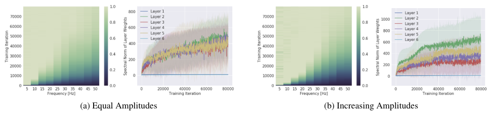
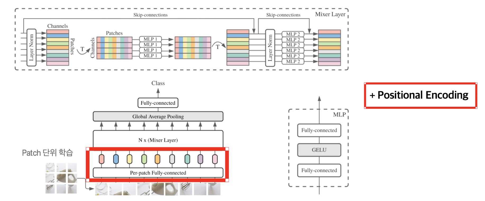

Myocardial infarction prediction is a critical task across various medical fields. Fundamentally, myocardial infarction prediction models provide methods to identify abnormal signals or measurements that do not align with expected healthy patterns. Such predictions play an essential role in early diagnosis and timely initiation of treatment. In modern medicine, a multimodal approach is crucial for predicting and diagnosing complex diseases like myocardial infarction. Therefore, we propose an MLP Mixer model that utilizes multimodal data, integrating ECG data, echo data, and clinical notes to enhance the accuracy of myocardial infarction predictions. The proposed model effectively combines information from different data sources, offering more efficient and improved performance compared to conventional myocardial infarction prediction models. The performance of the proposed model was evaluated through comparative experiments. Experimental results confirmed that our model demonstrated superior performance across various test cases compared to previous models.
For the crucial task of myocardial infarction prediction, we harnessed the MIMIC-IV dataset, a substantial public database employed for medical research and education. Originating from an extensive U.S. hospital's ICU, this dataset encompasses comprehensive medical details of patients, with access governed by approval due to the sensitive nature of the information. It serves as an ideal resource for intricate medical data analysis, containing a variety of data types, including biometric signals, medical records, diagnostic information, treatment procedures, and clinical notes. Within the MIMIC-IV dataset, subsets like clinical notes, ECG, and echo data provide: Clinical notes documenting the medical conditions and treatments as written by healthcare professionals, vital for extracting significant insights through Natural Language Processing (NLP) techniques. ECG data, the recordings of cardiac electrical activity, crucial for diagnosing heart conditions such as arrhythmias and myocardial infarction, offering a temporal dimension to the signals related to heartbeats. Echo data, echocardiograms used to assess the heart's structure and function, which provide essential diagnostics and monitoring for heart diseases.
Traditional approaches to handling multi-modality, including image and signal data processing, have progressed towards increasing a model's capacity, which refers to the number of learning parameters within a model. For any regression problem, enhancing the model's capacity allows for more accurate predictions when addressing complex problems. This is analogous to when a simple linear function model fails to predict accurately for complex issues, and a more complex cubic function model yields results that are closer to the real value distribution. However, expanding the capacity necessitates training a larger number of parameters, leading to longer training times. Additionally, as each parameter transforms the input tensor, the computational cost required for operations also increases. As a result of this direction, recent models have grown larger and heavier, demanding significant computing resources to deliver high performance. Neural networks have the capability to approximate arbitrary functions through inputs and outputs. Indeed, neural networks are a class of functions with exceptional expressiveness, capable of learning random input-output mappings with 100% accuracy. Nonetheless, despite this capability, neural networks tend to favor low-frequency functions that are globally consistent and lack local variations, that is, smooth functions.
 (a): When all frequency components of the target function have the same amplitude / (b): When the high-frequency components of the target function have greater amplitudes From experiments conducted under these two scenarios, it has been observed that neural networks prioritize learning lower frequencies during the training process, even in cases where higher frequencies possess greater amplitudes. In simple terms, this implies that over-parameterized neural networks prioritize learning simple patterns that generalize across data samples, leading to a situation where the learning of more specific information is not effectively performed.The structure of the model we propose is shown in the figure below.
 Our proposed MLP Mixer model introduces a new dimension by incorporating positional encoding, building upon the existing MLP-Mixer model. Traditional neural networks tend to focus on learning low-frequency information, encountering a problem known as spectral bias where high-frequency information is less effectively learned. By integrating positional encoding, we aimed to address this issue, offering a solution that also enhances the learning of high-frequency information. We conducted experiments using the a forementioned MIMIC IV dataset and established a control group for comparison. Furthermore, to compare with existing neural networks, we conducted comparative experiments using ResNet50.